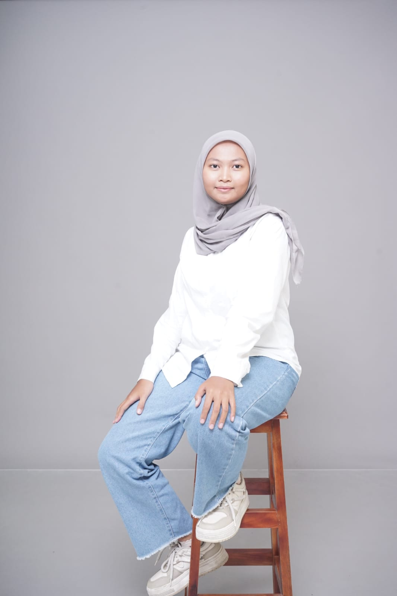

ranin112
Let's Start a Website
Website ini dibuat sebagai salah satu poin penilaian pada Mata Kuliah Cloud Computing
Nama:
Ranindya Dwi Qintari
NIM:
233140707111112
Kelas:
T4J
Program Studi:
Teknologi Informasi
Fakultas:
Vokasi Universitas Brawijaya
